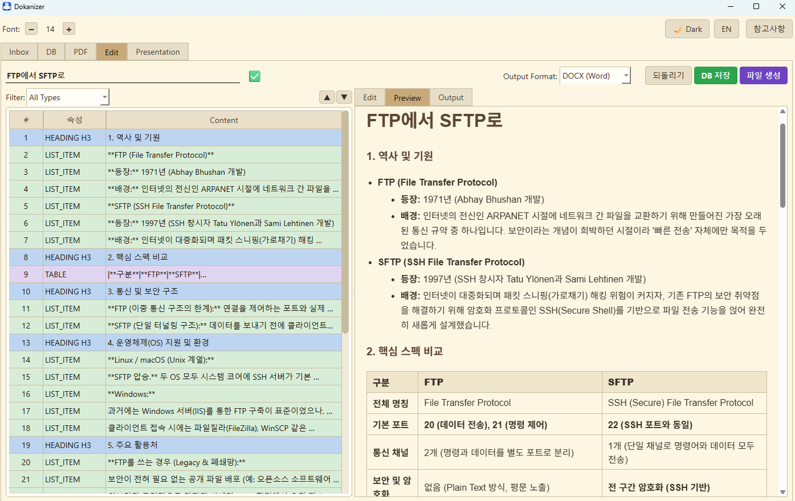
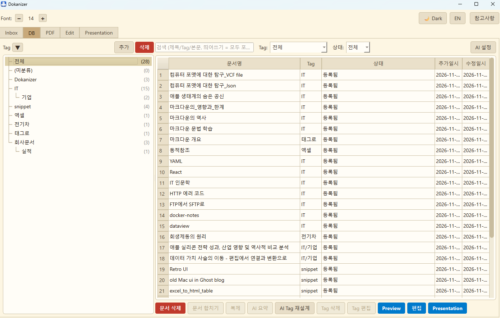
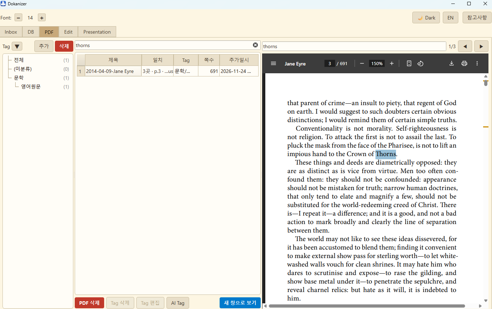
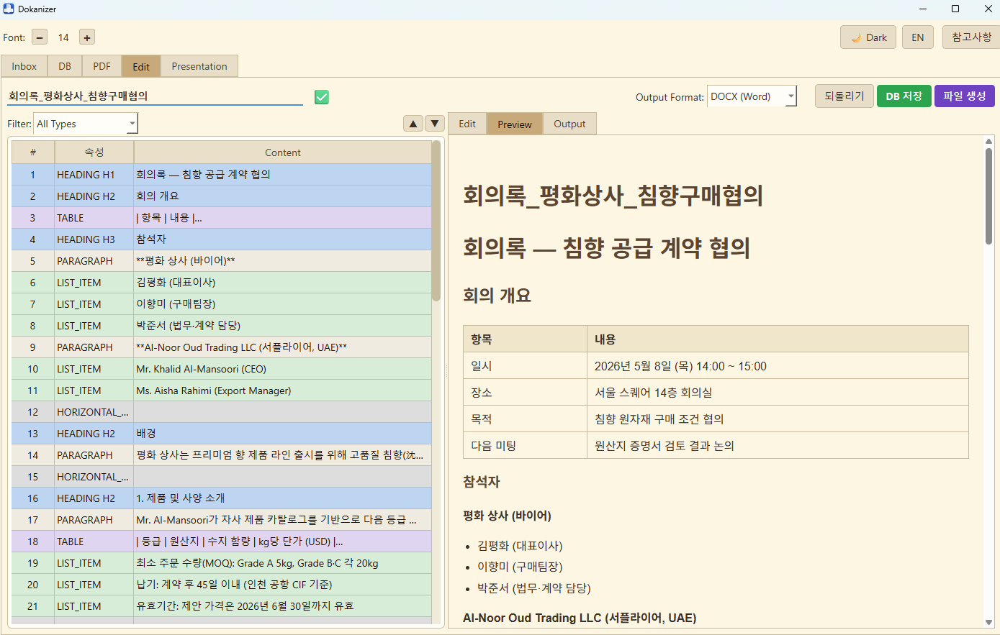

넣기
끌어다 놓으면 정리 끝
MD · Word · 이메일을 Inbox에 넣으면 파싱, Tag, 이미지 수집까지. Obsidian 첨부 이미지도 따라옵니다.
문서를 쓰는 시간보다 변환하는 시간이 길었습니다.
Markdown · Word · 이메일을 넣으면 정리되고,
PPTX · DOCX · EPUB로 꺼내 씁니다.
90일 체험판 · 관리자 권한 없이 설치

넣기
MD · Word · 이메일을 Inbox에 넣으면 파싱, Tag, 이미지 수집까지. Obsidian 첨부 이미지도 따라옵니다.

찾기
흩어진 문서와 참조 PDF를 한곳에서. 찾은 쪽을 바로 보고 복사합니다.

꺼내기
템플릿을 한 번 등록하면 슬라이드 배분은 자동. 표로 고치고 바로 미리봅니다.
